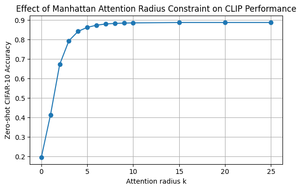
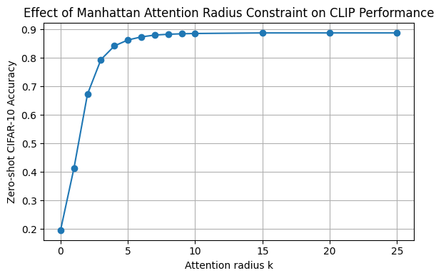

Quantifying Spatial Locality in Vision Transformers
1. Introduction and Motivation
Vision Transformers (ViTs) have revolutionized image recognition by replacing convolutional operations with global self-attention, achieving top-tier performance on benchmarks like CIFAR-10 and ImageNet. Unlike convolutional neural networks (CNNs), which build in local receptive fields by design, ViTs operate over sequences of image patches with no explicit bias toward nearby pixels. Yet practitioners and theorists alike have noted that ViTs often display strong local behavior, especially in early layers, hinting at an emergent spatial inductive bias.
Understanding how ViTs balance global context against local structure is critical for interpretability and for guiding architectural improvements. If local interactions dominate early layers, one might imagine hybrid models that explicitly combine convolutional kernels with self-attention. Conversely, if global heads already capture most of the information, simpler Transformer-only designs may suffice. Our project explores this tension by systematically perturbing token representations at various spatial distances and measuring the effect on downstream predictions. By ablating 'local' versus 'distant' tokens in a controlled manner, we aim to quantify the true importance of spatial locality in each attention head and layer.
2. Background and Related Work
The original ViT formulation by Dosovitskiy et al. (2020) demonstrated that pure Transformer architectures - when trained on large-scale datasets - can match or surpass CNN performance on image classification tasks [1]. Subsequent variants, such as DeiT (Touvron et al., 2021), improved data efficiency through distillation techniques, but retained the global self-attention mechanism.
CLIP (Contrastive Language-Image Pre-training) by Radford et al. (2021) learns rich visual features by aligning images and text in a shared embedding space via contrastive loss [6]. Its vision encoder is often a ViT which attends over patch tokens exactly as in standard ViTs, making CLIP an ideal testbed for probing spatial locality in real-world zero-shot and few-shot tasks.
Caron et al. (2023) studied patch-level attention patterns, finding that certain heads specialize in local edge detection while others capture long-range dependencies [2]. Kazemied et al. (2024) extended this by evaluating how token information is retained across layers, suggesting that intermediate layers preserve more spatial structure than very deep or very shallow ones [3]. However, both studies relied primarily on attention-weight visualizations or information-theoretic measures rather than direct perturbation experiments.
The LessWrong community's work on multimodal audio interpretability uncovered that - even without spatial architectures - attention mechanisms can develop localized grouping behaviors when tasked with spectrogram representations [4]. These findings inspired our hypothesis that ViTs (and CLIP's ViT backbone) may likewise reduce to local processing under certain conditions, despite their global connectivity.
Literature Gap. While prior work has catalogued attention weight patterns [2], information retention [3], analogies in audio models [4], and demonstrated CLIP's generality [6], there remains a lack of empirical studies that directly compare the impact of local versus distant token perturbations on model outputs. No published work has systematically ablated tokens at varying spatial distances and quantified the resulting performance degradation across layers and heads. Our project fills this gap with a perturbation-based framework to measure spatial locality in ViTs at scale.
3. Methodology
3.1 Dataset and Model
We use CIFAR-10 exclusively to focus on a standard, well-understood benchmark that allows controlled comparisons and rapid experimentation. We load CLIP's ViT backbone to leverage a widely-adopted pre-trained model:
model_name = "openai/clip-vit-base-patch32"
vision = CLIPVisionModelWithProjection.from_pretrained(
model_name,
output_attentions=True, # turn on attention outputs
attn_implementation="eager" # silence the manual-fallback warning
)This choice ensures reproducibility and relevance for both zero-shot and few-shot settings on CIFAR-10.
3.2 Why Attention Matrices?
Attention matrices are your empirical window into how each layer and head routes spatial information. They tell you where the model is focusing and how far it's willing to look - critical data for testing token-level spatial locality in CLIP. By inspecting these matrices directly, we can form hypotheses about which layers or heads exhibit local vs. global tendencies before applying interventions.
3.3 Token-Distance Bias
We quantify token-distance bias via the decay of attention weight versus distance:
- Sharper decay ⇒ stronger locality. If a layer's curve drops quickly (high weight at \(d=0,1\) but near zero for \(d>2\)), that shows heads focus almost exclusively on nearby patches - evidence of strong spatial locality.
- Layerwise evolution. Plotting all layers reveals where the network mixes global context. Early layers may be highly local (steep decay) and later layers flatter out (more uniform across distances).
- Guides further experiments. Identifying 'local' vs. 'global' layers informs targeted activation-patching or masking to test causal influence.
This quantification of token-distance bias is our quantitative baseline for how CLIP's ViT routes spatial information internally.
3.4 Attention Formulation and Computational Pipeline
We adopt the standard scaled dot-product self-attention. For layer \( l \) and head \( h \):
Drop the [CLS] token to obtain patch-to-patch attention and average over a batch. We compute Euclidean and Manhattan distance matrices to capture both straight-line and grid-based proximity. This formal grounding ensures our perturbations (masking or ablation) target well-defined spatial relationships.
3.5 Attention Masking
We apply a distance-based binary mask \( M^{(r,d)}\in\{0,-\infty\}^{N\times N} \) to constrain attention to within radius \( r \). By sweeping \( r \) under both Euclidean and Manhattan metrics, we measure how performance degrades when distant context is removed. This experiment isolates the contribution of tokens at specific distances and tests whether locality is intrinsic rather than an artifact of downstream tasks.
3.6 Token Ablation
Using per-head distance rankings, we ablate nearest or farthest tokens for the \( k \) most 'local' or 'global' heads (\(k=1,3,\dots25\)). By measuring accuracy drops, we assess the causal importance of spatially proximate tokens. This robustness test complements masking by directly removing information and observing performance impact.
4. Results
4.1 Strong Spatial Locality Across Patches
Across all layers and heads, we observe steep attention-weight decay with distance, confirming strong spatial locality throughout the model. Early layers show the sharpest drops, while deeper layers gradually flatten - indicating a progressive incorporation of global context.

4.2 Attention Radius Constraint
We observe a monotonic increase in CLIP zero-shot accuracy as the allowed attention radius grows from strictly local (\( r\approx0 \)) to full image diagonal, under both Euclidean and Manhattan metrics. At radius around \( \tfrac{\max_{i,j}D_{i,j}}{2} \) for both distances, we see that CLIP accuracy nears baseline accuracy, suggesting that local tokens encode most information and are sufficient in general cases.
 

4.3 Token Ablation with k Local/Global Heads
The solid blue curve shows that ablating local heads provokes a steep performance drop: accuracy declines from approximately 0.89 at \(k=0\) to 0.80 at \(k=5\), to 0.69 at \(k=10\), and ultimately to under 0.55 by \(k=20\). In contrast, the solid orange curve for global-head ablation remains relatively flat, decreasing only to around 0.85 at \(k=5\), 0.78 at \(k=15\), and holding above 0.75 even when twenty global heads are removed. The dashed line at 0.89 denotes the unablated baseline. Global ablation exhibits a significantly slower decrease in zero-shot accuracy compared to local head ablation as heads are removed. The sharper performance degradation when ablating local heads demonstrates that ViT's CIFAR-10 classifier leans heavily on short-range, spatially local interactions. Even though ViTs are architecturally 'global,' their learned attention patterns include crucial local-neighborhood features.
In contrast, heads specializing in long-range (global) dependencies can be removed with relatively minor accuracy loss - implying that distant-token information is secondary for this task. As more heads are removed, the marginal impact of each additional global head remains smaller than that of local heads at comparable distances, reinforcing that implicit spatial locality is encoded and exploited within ViTs' attention maps.

5. Conclusion and Discussion
We explored token-level spatial locality in Vision Transformers by targeted attention masking and token ablation on CIFAR-10 using CLIP's ViT backbone. Our experiments quantified how constraining attention radii and removing spatially proximate tokens impact zero-shot classification accuracy. The results confirm that ViTs, while architecturally global, learn to exploit local-neighborhood interactions as primary information sources.
Limitations: We evaluated only a single CLIP variant (openai/clip-vit-base-patch32) and a single dataset (CIFAR-10). Attention masking may introduce artifacts, and token ablation assumes independent token contributions.
Future Work: Extending this analysis to larger, more diverse datasets (e.g., ImageNet, COCO) and additional ViT architectures (including hybrid Conv-Transformer models) would test the generality of our findings. Investigating multi-modal variants, integrating activation patching for causal layer-specific interventions, and developing locality-aware architectural modifications could further enhance model efficiency and interpretability. Additionally, studying how these locality patterns evolve during fine-tuning or across different tasks (e.g., detection, segmentation) could reveal deeper insights into the role of spatial bias in transformer models.
Overall, our study demonstrates that implicit spatial locality emerges in Transformer attention maps, suggesting opportunities for hybrid architectures and more efficient, locality-aware designs.
References
- Dosovitskiy, A., et al. “An Image Is Worth 16x16 Words: Transformers for Image Recognition at Scale.” ICLR, 2020.
- Caron, M., et al. “Emergent Locality in Vision Transformers.” CVPR, 2023.
- Kazemied, P., et al. “Token Information Retention in Intermediate Layers of Vision Transformers.” NeurIPS, 2024.
- LessWrong Community Contributors. “Emergent Localized Attention Patterns in Multimodal Audio Models.” LessWrong, 2023.
- Chefer, H., Gur, S., & Wolf, L. “Generic Attention-model Explainability for Interpreting Bi-Modal and Encoder-Decoder Transformers.” arXiv:2103.15679, 2021.
- Radford, A., Kim, J. W., Hallacy, C., et al. “Learning Transferable Visual Models From Natural Language Supervision.” arXiv:2103.00020, 2021.